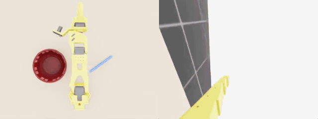

Scripted IK baseline in Isaac Sim, overhead (left) and wrist (right) cameras.
0.80
Scripted IK baseline, 10 sim scenes
0.00
GPT-6 Astra (LLM policy), sim
0 / 1
GPT-6 Astra on the real arm, operator-graded
10
Eval runs published here
Physical SO-101
A real arm with a wrist camera and no object positions from a simulator. The operator graded each trial (1 = success). All physical runs →
| Run (UTC) | Policy | Steps | Operator | Notes |
|---|---|---|---|---|
| 2026-10-12 17:42 | agent (openai/gpt-6-astra) | 1195 / 1500 | 0 | Gave up: the bowl kept blocking the wrist camera's view of the pen, and a grasp caught the bowl rim. Operator: "my setup was bad, it just tried moving the bowl to the pen." |
Isaac Sim
Scored automatically with success_at_end (fraction of scenes where the pen ends at rest in the bowl). Episodes are at 30 Hz and capped at 330 steps.
All sim runs →
| Run (UTC) | Policy | Scenes | Success | Avg steps | Notes |
|---|---|---|---|---|---|
| 2026-10-12 16:54 | agent (openai/gpt-6-astra) | 1 | 0.00 | 183 | LLM policy; pushed the pen out of reach and gave up |
| 2026-10-12 06:00 | scripted IK | 1 | 1.00 | 241 | Live GUI run (the demo above) |
| 2026-10-12 05:58 | scripted IK | 3 | 0.67 | 273 | ik_eval.sh test |
| 2026-10-12 05:51 | scripted IK | 2 | 1.00 | 244 | CLI run with guardrails on |
| 2026-10-12 05:49 | scripted IK | 2 | 1.00 | 244 | First run through the inspect-robots run CLI |
| 2026-10-12 05:43 | scripted IK | 10 | 0.80 | 260 | Baseline result: the place step aims the pen's measured centre at the bowl |
| 2026-10-12 05:42 | scripted IK | 5 | 0.80 | 255 | Release lowered to just above the rim |
| 2026-10-12 05:40 | scripted IK | 5 | 0.60 | 264 | Pen made hexagonal so it stops rolling |
| 2026-10-11 22:04 | scripted IK | 1 | 0.00 | 330 | Early attempt; the round pen rolled away before the grasp |